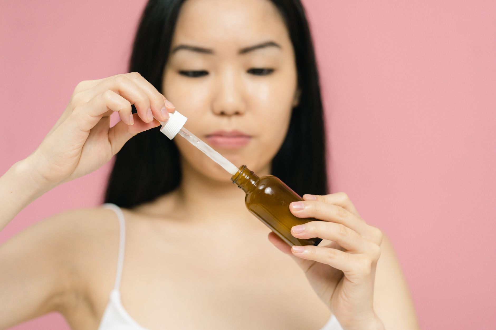

Inicio/Artículos/K-Beauty · Ingredientes
PDRN en skincare: el ingrediente coreano que promete "regenerar" la piel
7 min de lectura · Actualizado 18 de agosto de 2026 · Por Miguel Lopez

Introducción
Después del ácido hialurónico, la niacinamida y el "snail mucin", el K-beauty tiene un nuevo protagonista: el PDRN. Sérums, ampollas y cremas con este ingrediente prometen una regeneración de la piel casi de nivel clínico. Este artículo explica qué es realmente, de dónde viene la tendencia y qué dice la evidencia disponible, sin instrucciones de uso ni recomendaciones de compra.
Qué es el PDRN
PDRN son las siglas de polidesoxirribonucleótido, un ingrediente derivado de biotecnología desarrollado y popularizado en Corea del Sur. Se obtiene a partir de fragmentos de ADN purificado, habitualmente de origen salmón o trucha, procesados para uso cosmético y en tratamientos estéticos profesionales.
Qué beneficios se le atribuyen
Las marcas y el marketing K-beauty asocian al PDRN con:
- Estimulación de la regeneración celular de la piel.
- Hidratación profunda y duradera.
- Reparación de la barrera cutánea.
- Mejora de la textura y la elasticidad.
- Reducción del enrojecimiento y la sensibilidad.
Estas son las promesas que circulan en el mercado, no una lista de efectos confirmados de forma independiente (ver la sección de evidencia más abajo).
La tendencia en el K-beauty
El PDRN se comercializa en formato sérum, ampolla, esencia y cremas "regenerativas", integrado dentro de las rutinas de varios pasos características del skincare coreano. Según las marcas que lo venden, los resultados visibles pueden tardar entre una y seis semanas, dependiendo de la preocupación que se busque tratar. Esa cifra proviene del propio marketing, no de estudios independientes.
En cosmética, las marcas estiman entre 1 y 6 semanas para notar resultados visibles. En el terreno médico-estético, el protocolo habitual del PDRN inyectable es de 3 a 4 sesiones, espaciadas entre una y dos semanas. El ADN purificado usado en la mayoría de las fórmulas proviene habitualmente de salmón o trucha.
PDRN cosmético vs. PDRN clínico
Conviene distinguir dos contextos muy distintos. En medicina estética, el PDRN se inyecta en consulta profesional (mesoterapia, skin boosters), y ahí sí existen estudios sobre su papel en la cicatrización y la regeneración de tejidos. En cosmética de venta libre (sérums, cremas) el ingrediente actúa solo en la superficie de la piel, con una capacidad de penetración mucho más limitada, por lo que la evidencia disponible no permite esperar los mismos resultados que un tratamiento inyectable.
PDRN vs. exosomas y factores de crecimiento: no son lo mismo
En los últimos meses han aparecido en las mismas estanterías otros ingredientes "regenerativos": los exosomas y los factores de crecimiento (growth factors). El marketing a veces los agrupa junto al PDRN, pero su origen y mecanismo son distintos. El PDRN es un fragmento de ADN purificado que actúa sobre todo como señal antiinflamatoria y estimulante celular; los exosomas son vesículas diminutas liberadas por células (a menudo de origen vegetal o de cultivos celulares) que transportan proteínas y material genético; y los factores de crecimiento son proteínas específicas que activan de forma más directa la producción de colágeno.
En la práctica, esto importa porque los tres ingredientes cada vez se combinan más en un mismo sérum "regenerativo", sin que la etiqueta siempre aclare cuánto hay de cada uno ni en qué concentración.
Qué dice la evidencia y qué falta por saber
Existen estudios clínicos sobre el PDRN, sobre todo en el ámbito médico-estético (inyectables aplicados por dermatólogos), que muestran mejoras en la regeneración de tejidos y cicatrización. La evidencia sobre los cosméticos de venta libre con PDRN es bastante más limitada: se apoya principalmente en estudios más pequeños, muchos de ellos financiados por las propias marcas, y no en ensayos clínicos independientes a gran escala.
Otro punto a tener en cuenta: gran parte de las etiquetas de productos cosméticos con PDRN no especifica el porcentaje del ingrediente activo ni su peso molecular, lo que hace difícil evaluar desde afuera qué tan concentrada es cada fórmula. Y al ser un ingrediente de alta demanda, el mercado del K-beauty ha registrado casos de versiones falsificadas, un problema documentado también en otros ingredientes populares de esta industria y no exclusivo del PDRN.
En cuanto a tolerancia: en su forma cosmética tópica, el PDRN se describe generalmente como bien tolerado, incluso en pieles sensibles, aunque como con cualquier ingrediente activo la irritación individual es posible. Las versiones inyectables, al ser un procedimiento médico, conllevan los riesgos propios de cualquier inyección y se administran únicamente en consulta profesional.
Conclusión
El PDRN en cosmética es un ingrediente con una historia científica real detrás en su uso médico-estético, pero cuyas promesas en formato sérum o crema todavía dependen más del marketing que de estudios independientes a gran escala. Existe una diferencia real entre lo que muestra la evidencia sobre el PDRN inyectable en manos de un profesional y lo que puede ofrecer razonablemente una versión de venta libre aplicada sobre la piel.
- ¿Qué es el PDRN en cosmética?
- Son polinucleótidos derivados de ADN (normalmente de esperma de salmón o trucha, purificado), presentes en sueros y cremas por su potencial para estimular la regeneración cutánea y mejorar la hidratación. Es un ingrediente muy popular en el skincare coreano reciente.
- ¿Hay evidencia científica real detrás del PDRN o es solo marketing?
- Existen estudios clínicos, sobre todo en el ámbito médico-estético (inyectables usados por dermatólogos), que muestran mejoras en la regeneración de la piel. La evidencia sobre los cosméticos de venta libre con PDRN es más limitada y se basa principalmente en estudios más pequeños, a menudo financiados por las propias marcas.
- ¿Es lo mismo el PDRN en crema que el inyectable que usan los dermatólogos?
- No. El PDRN inyectable, aplicado por profesionales médicos, penetra en capas más profundas de la piel y tiene mayor respaldo clínico. Las versiones cosméticas de venta libre actúan solo sobre la superficie, con una capacidad de penetración mucho más limitada.
- ¿Tiene efectos secundarios?
- En cosmética tópica, el riesgo que se describe es bajo, aunque como con cualquier ingrediente activo puede darse irritación en pieles sensibles. Las versiones inyectables, al ser un procedimiento médico, tienen los riesgos propios de cualquier inyección y se administran solo bajo supervisión profesional.
- ¿Se considera apto para todo tipo de piel?
- Se describe generalmente como bien tolerado, incluso en pieles sensibles, aunque la tolerancia individual a cualquier ingrediente nuevo puede variar de persona a persona.
- ¿Cuánto cuesta un tratamiento con PDRN?
- Los productos cosméticos con PDRN (sérums, ampollas) suelen tener un precio similar al de otros cosméticos premium. Los tratamientos inyectables en clínica son considerablemente más caros y su costo varía según el centro y el profesional.
Preguntas frecuentes
Fuentes
Enlaces a la fuente original, para que puedas comprobarlo por tu cuenta.
Miguel Lopez
Periodista independiente, no profesional sanitario. Escribe sobre tendencias de salud y fitness citando siempre las fuentes primarias, para que puedas comprobarlo por tu cuenta. Más sobre el sitio.